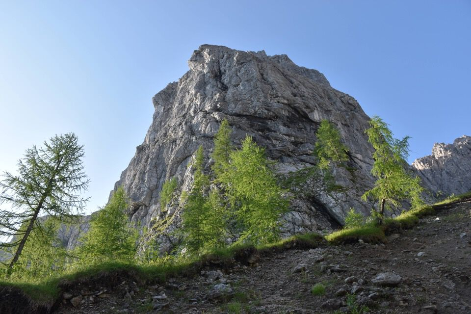

Déjà Vu (vedi Zâbus nord).
Il mare di nubi cerca di sommergere la conca di Bordaglia.
Io NON accetto schifezze del genere. Io NON posso tacere su orrori simili.
Trovarsi dinnanzi a queste cose è sempre umiliante per l'escursionista: rosso sangue, una pugnalata alla bellezza dei monti.
***
«A questo punto del proprio sforzo, l'uomo si trova davanti all'irrazionale e sente in sé un desiderio di felicità e di ragione. L'assurdo nasce dal confronto fra il richiamo umano e il silenzio irragionevole del mondo. È questo che non bisogna dimenticare; è a questo che bisogna aggrapparsi, poiché possono nascerne le conseguenze di tutta una vita. L'irrazionale, la nostalgia umana e l'assurdo, che sorge dalla loro intima conversazione: ecco i tre personaggi del dramma, che deve necessariamente finire con tutta la logica di cui un'esistenza è capace.»
(Il mito di Sisifo, Camus)
***